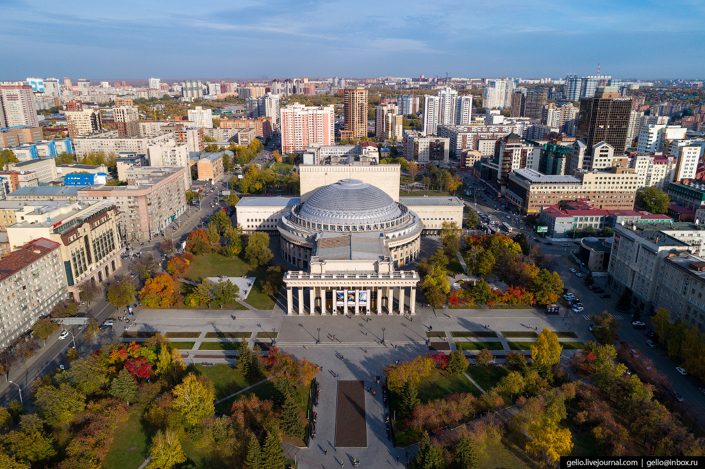
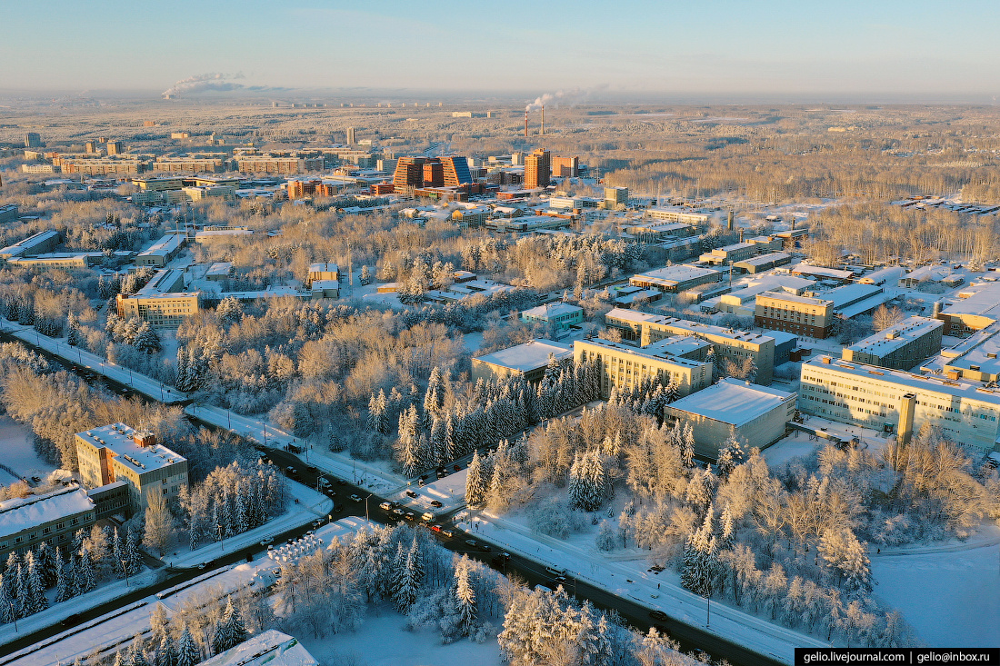

О городе
Новосибирск — третий по численности населения город России и крупнейший научный центр страны, расположенный на юго-западе Сибири. Город славится своими образовательными учреждениями, музеями, театрами и научными достижениями.
Достопримечательности
Здесь находится Новосибирский Академгородок — уникальный центр научных исследований. В городе также расположены Новосибирский государственный университет, крупнейший в Сибири оперный театр и множество культурных объектов.
